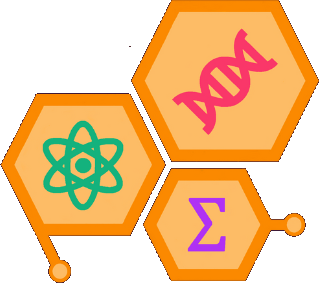

3e édition
Édition 2025
La 3e édition a réuni plus de 100 étudiants et étudiantes de 3 universités et instituts universitaires, avec une programmation tournée vers l’espace, le Nord et l’international.

L’édition 2025 en chiffres
- Plus de100participants
- 3universités ou instituts
- 5conférencier·ères
- 5panélistes
- 5entreprises et associations au cocktail
La programmation
Quatre conférences, deux ateliers, deux tables rondes et deux panels sur une fin de semaine.
-
Conférence
Astronomie
Olivier Hernandez
Directeur du planétarium -
Conférence
Savoirs autochtones
Carole-Anne Gillis
Directrice de la recherche à l’Institut Gespe’gewa’gi -
Conférence
Astrophysique
Marie-Lou Gendron Marsolais
Astrophysicienne -
Conférence
Biais cognitifs
Joël Leblanc
Journaliste scientifique -
Atelier
Vulgarisation scientifique
Steve Charette
Professeur microbiologiste spécialisé dans la communication et la vulgarisation -
Atelier
Entrepreneuriat scientifique
Emily Cloutier
Conseillère au développement de l’entrepreneuriat technologique et scientifique -
Table ronde
Exploration spatiale
-
Table ronde
OGM appliqués aux humains
-
Panel
Sciences dans le Nord
-
Panel
Sciences à l’international
Aussi au programme
- Soirée brise-glace
- Biblio vivante
- Concours
- Cocktail
- Soirée du samedi
- Brunch du dimanche